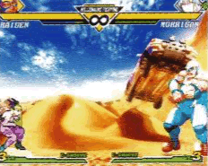

CHIKA NAGAYAMA
Scrolling Lead
Development Division 1
Representative Works: X-Men, Alien vs. Predator, Dungeons & Dragons: Shadow Over Mystara, Marvel vs. Capcom series, Capcom vs. SNK series
Role: Backgrounds (Osaka Castle stage), etc.
Favorite Character: Kyosuke Kagami
We're sure there's no small number of players entranced by the moving 3D visuals in the stage backgrounds. Despite her petite and dainty appearance, these powerful realistic movements were brought to life by the passion of the Scrolling Lead, Chika Nagayama!
EVEN THE SMALLEST BACKGROUND MOVEMENTS REQUIRED FULL ATTENTION!
Of course, the biggest point of concern when it came to backgrounds has got to be "movement". Every one of the movements of background characters were made possible by referencing the movement of those around me. There were lots of background characters that we wanted to include this time, but weren't able to. All of those characters were determined through discussion with the planner.
In the Nairobi stage, rally cars rush from the back of the screen into the foreground. We intentionally made it so they went just high enough that it seemed like they would crash into the fighters, but barely miss. So if you go "whoa!" and crouch out of instinct, that's all according to plan. And in the New York stage, the beer-drinking figure gradually acts more and more drunkenly. We really focused on the details!

(An effect that makes you block high without even thinking. But you can't actually block it... right!?)
Because the backgrounds were 3D this time, it wasn't difficult to have elements of it move, but we still ran up against storage and processing constraints. Many tears were shed over elements we had to remove. For instance, in Kinderdijk (the windmill stage), we wanted the grass to be longer and blowing in the wind. And in Barentsburg (the ice stage), we had planned on having even more things fly out of the ships.
CvS2 was a challenge to ourselves to attempt expression in 3D, so I feel that as we continue to refine our skills, we'll be able to accomplish even more in that space. With the shift to 3D, we were able to create dramatically more realistic movements, so of course I want to continue trying to animate all sorts of things! From the actual movement, to the means of presentation, it feels like there's still so much potential. I hope to continue creating the kinds of backgrounds and objects that nobody has ever seen before.